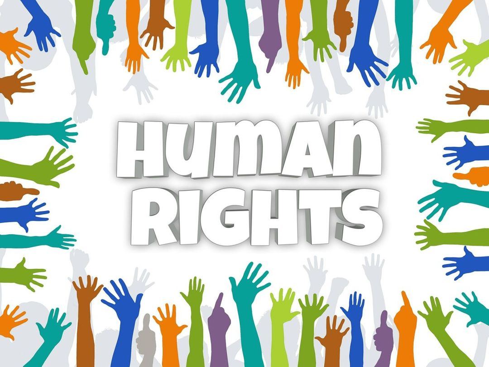
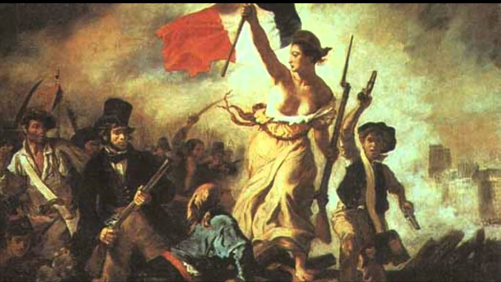

Definicja Praw Człowieka
Prawa człowieka to fundamentalne prawa i wolności przysługujące każdemu człowiekowi, niezależnie od jego narodowości, płci, wieku, religii, pochodzenia czy jakichkolwiek innych cech. Są one uniwersalne, nienaruszalne i niezbywalne, co oznacza, że każdy ma do nich prawo od momentu narodzin. Ich celem jest ochrona godności, wolności oraz równości jednostki. Podstawowe prawa człowieka obejmują: Prawo do życia. Prawo do wolności i bezpieczeństwa. Prawo do wolności słowa i wyrażania opinii. Prawo do edukacji. Prawo do równego traktowania i ochrony przed dyskryminacją. Prawa człowieka są zapisane w międzynarodowych dokumentach, takich jak Powszechna Deklaracja Praw Człowieka (1948), oraz w konstytucjach i ustawach krajowych. Ich przestrzeganie jest kluczowe dla zapewnienia pokoju, sprawiedliwości i harmonijnego współistnienia ludzi na całym świecie.
Kategorie Praw Człowieka
Prawa człowieka dzielą się na kilka kategorii, które obejmują między innymi:
- Prawa obywatelskie i polityczne: Prawo do życia, wolności słowa, wolności wyznania itp.
- Prawa ekonomiczne, społeczne i kulturalne: Prawo do edukacji, pracy, ochrony zdrowia itp.
- Prawa kolektywne: Prawo do pokoju, rozwoju czy czystego środowiska.
Krótka Historia Praw Człowieka
Historia praw człowieka to proces, który rozwijał się przez wieki: Starożytność: Pierwsze idee praw w "Kodeksie Hammurabiego" czy prawie rzymskim. Średniowiecze: Ważne dokumenty, jak "Magna Carta" (1215), ograniczające władzę monarchy. Oświecenie: Myśliciele, tacy jak John Locke, rozwijali koncepcje praw naturalnych; powstały dokumenty jak Deklaracja Niepodległości USA (1776). XX wiek: Po II wojnie światowej ONZ przyjęła Powszechną Deklarację Praw Człowieka (1948). Obecnie: Walka o równość, prawa kobiet, mniejszości i nowe wyzwania, jak zmiany klimatyczne czy technologia.
Kontakt
Masz pytania lub chcesz dowiedzieć się więcej? Skontaktuj się z nami pod adresem: jakubrogo@prawaczlowieka.pl